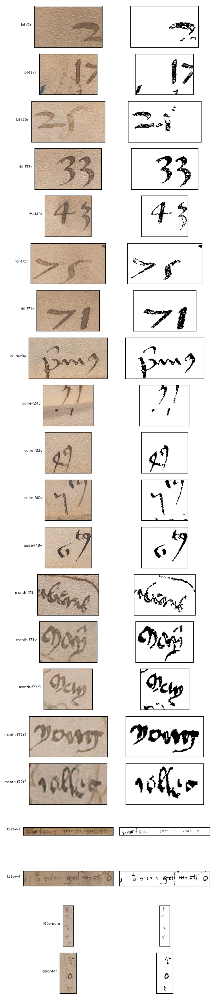

The ink supports two groups of scribes. Earlier researchers proposed two, five, or as many as twelve by looking at the writing. We measured the size, slant, pen width, and shape of traced letters, then grouped the pages without using those proposed labels. A count passes our test when the top and bottom of a page fall in the same group for at least 95% of pages.
How many groups hold up?
The two groups
Here is the letter d from three pages in each group. The zodiac labels in the third row sit over paint, which breaks up the ink in the image:

How earlier scribe counts compare
The agreement score compares two ways of grouping pages. A score of 1 means they match; 0 means they agree no more than chance.
Pages with disputed scribes
Writing added elsewhere
The page numbers, gathering marks, month names, German lines on f116v, numbers on f49v, and a color word may be later writing. Each mark is shown on Yale's image. A lower darkness score means darker ink; the manuscript text scores 0.70.
